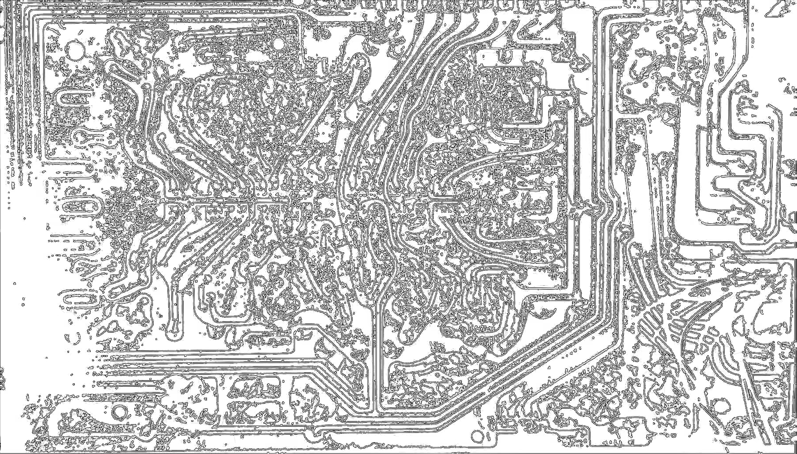
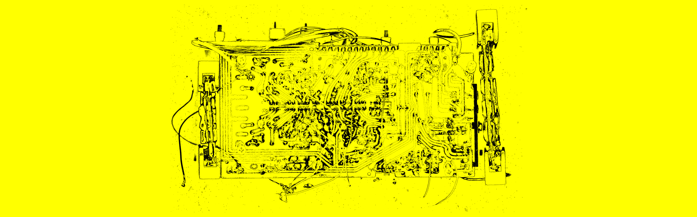

你正在使用手机浏览对吧 为了获得完整的海域体验请使用电脑打开主页^^
海域 ） （ Parages 当我们的天空连成一片，家宅便有了屋顶。

门三号
流竄在定淮門下的双肋与穿透岩层的根脉一同寄存，我們得到一種來自一点透视的複習法。 這使得他們可以不斷地延綿在每一層現實的水泥下与那些包含频段的呢喃分割，与一片片的 变调中占空并划过十四所、划过迎担洲没有色彩的气候。一. 离开朋友的出租屋，前年南京的一个雪夜里，随着电磁阀的释放我们推开漆皮剥落的单元门， 风雪从山和楼房的间隙中穿过。突然我们发现在山体上平时紧锁的防空洞门半开，不断的深 入山体，而两年过后我才意识到此时明长城的遗址正在头顶以相同的方向向黑暗延伸。洞体 非常僵直，只在尺度的四分之三处冒出一些你总会按照常识把他归类到客厅、工作室、卧室 的空间——实际上这并不可能再按照以上任何一种定义去工作了，洞穴内部和凝固的气温一 样安静，在折返的路上我们发现了一台磁带 Fm 收音机和干瘪的猫的尸体。我抱着收音机塑 料的外壳离开了山洞，令人感到意外的事情有很多;为什么我们在回来的路上才发现了尸体、 这条防空洞居然有一个尽头、以及当离开洞口五分钟后再次折返，一把锁便挂在了门口。 二. 不得不承认的是这是一次令人沮丧的探险，骨架般被蚀刻而出的声源通道无法工作，整座城 市一如既往的笼罩在回忆与悼念里，在一些晴朗的冬夜也许会有一座座遗产的入口被意外生 成，你得以一瞥这些甚至比三线时期还要陈旧的水泥产物。有一天你也会有机会听到他们的 声音，不论是在火药局，电波站还是哪个下关的角落，带着跨越时空的不易这些设备期待着 你的赞叹，但是那些黏腻、无处不在的灰尘却被遗传到了现在——你并不喜欢他们，这是没 办法掩盖在冷漠的表情下的。重建这种看似回绝未来的联系视网膜唯一能做的，但这总是笼 罩在一份令人悲伤的感情下。不论你以多快的速度穿过下关大马路，哪些幸存在日占时期的 建筑以及那座铁塔不会发出任何 声音，此时又是南京最差的一个季节。


门三号的正面与背面

门三号在南宁不许礼貌现场 link：https://www.instagram.com/p/DF52M0-zZDm/?utm_source=ig_web_copy_link&igsh=MzRlODBiNWFlZA==

雾中的启程 关于德里达的文章《海域》